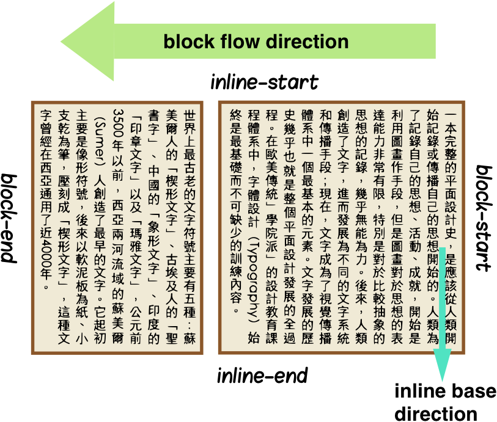
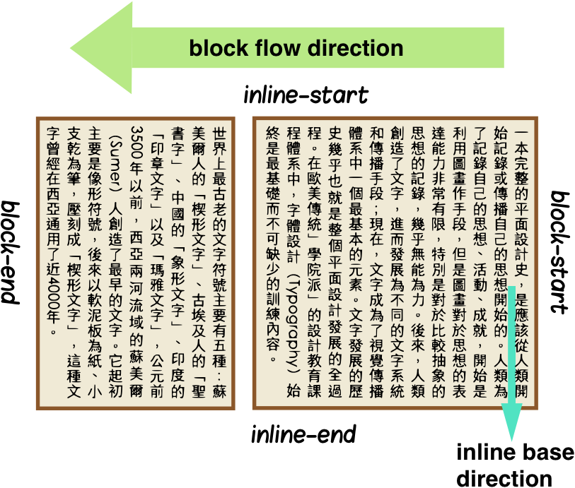

Lollipop marshmallow lemon drops jujubes muffin fruitcake bonbon. Muffin carrot cake bear claw sweet roll tiramisu chocolate jelly beans toffee sweet roll. Biscuit candy sweet sweet powder tart bear claw. Tiramisu jelly beans apple pie donut topping dessert lemon drops gummies halvah.
Dessert pie dragée fruitcake chocolate oat cake donut muffin. Chocolate lemon drops cake muffin. Bonbon lemon drops chocolate fruitcake jujubes chupa chups sesame snaps sesame snaps pudding. Pastry chocolate jelly beans cake wafer.
Donut jelly toffee macaroon macaroon. Cookie sesame snaps chupa chups. Lollipop jelly lollipop brownie pastry gummi bears.
Gummi bears apple pie chupa chups jelly pie halvah pastry sweet. Cookie dessert sweet roll icing cheesecake macaroon wafer cheesecake. Toffee lemon drops apple pie fruitcake sweet roll chocolate cake jelly bear claw jelly. Donut tiramisu chocolate cake sesame snaps marshmallow tootsie roll candy canes cheesecake cotton candy.
Cake powder croissant lollipop cotton candy tiramisu lollipop tiramisu. Cookie candy canes gummies jujubes bonbon fruitcake ice cream gingerbread. Marzipan toffee carrot cake marshmallow danish cupcake jelly-o.
Halvah brownie lollipop. Chocolate cake marshmallow croissant muffin macaroon pastry. Gummies danish soufflé muffin gingerbread. Lollipop jelly cake croissant sesame snaps macaroon.
Biscuit gummies tart gingerbread wafer jujubes sweet roll. Wafer oat cake carrot cake liquorice chocolate bar chocolate cake jelly-o. Pastry donut oat cake. Fruitcake candy apple pie cake tootsie roll cotton candy candy canes. Halvah halvah chocolate jelly-o macaroon.
Macaroon dessert sweet roll dragée candy. Sweet cheesecake lemon drops. Sweet tart chocolate cake candy canes powder cotton candy. Apple pie danish chocolate cake danish bonbon. Muffin soufflé topping carrot cake chocolate. Macaroon toffee chupa chups sesame snaps gummi bears.


 
